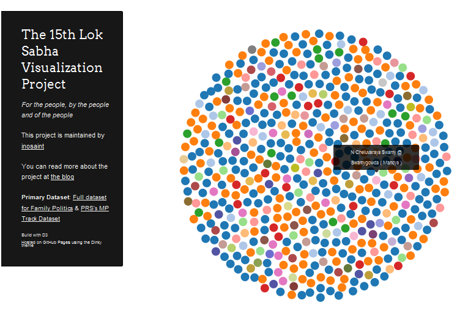
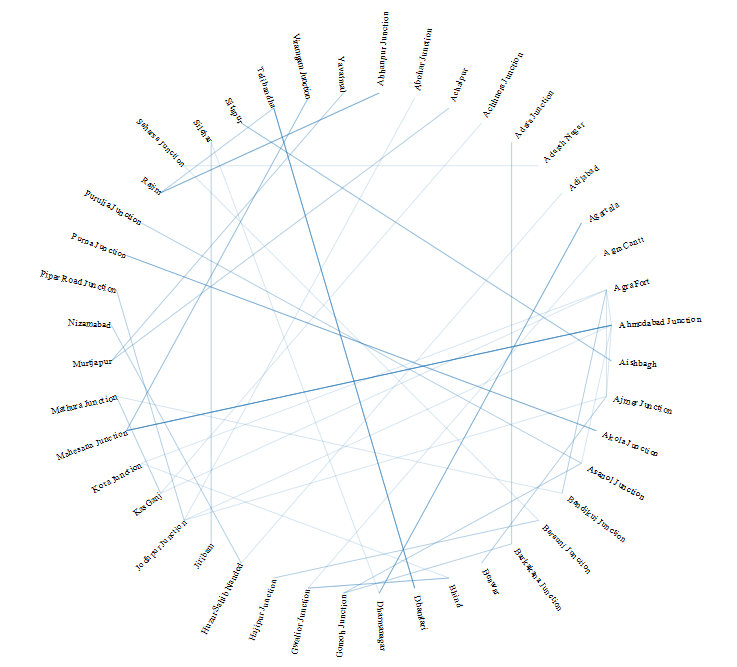

Information Visualization II
A Submission document by Kenneth D'souza.
Co-ordinator and Guide : Venkatesh Rajamanickam
Information Visualization - II was a 5 week module during the third semester. Continuing where Information Visualization - I left off, one of the focus was to have an interactive visualization at the end of this module as the main submission.
We started with an introduction to data modelling by Sridhar Pabbishetty. Where to find datasets and how we could use these to build our main visualization was another thing that we learnt.
By the end of the week, I chose the topic of visualizing the 15th Lok Sabha. And I chose to document the process on a blog. This was part of a conscious effort to document all my work this semester. The blog for the 15th Lok Sabha Project is here. The visualization is here.
The next week we looked at Classification systems and had a class assignment to read and understand an assigned topic. I was assigned the preface of Michael Focault's Order of Things'. I wrote my understanding of the reading which you can find here.
Next we had a series of short lectures followed by a reading assignment. Nature's Points of View articles were the ones assigned to us. I was assigned the Salience to Relevance article. We were asked to write a short paper which contained our understanding of the subject as well as find some relevant examples. I struggled to grok the topic but it was only post the presentation did I figure out that I had completely lost the plot. My paper for the same is over here.
We also had a 2 day session with Prof. Jignesh Khakkar where we dealt in brief about Interface Design concepts.
We had 2 workshops as part of the course. S. Anand from Gramener gave us a crash course which ended up with each of us taking up a dataset to visualize in 4 days. I teamed up with Shweta and we chose the Indian Trains dataset. Rasagy and Babu also chose the same dataset. The two teams decided to blog about the data hackathon turned assignment. You can find my team(Team ILikeTrains) writeup about the process here. The visualization is here.


Our other workshop was with our 2nd Batch IID senior, Arun Ganesh. It was about Geovisualization and it was a 5 day one. During the workshop, the class learnt how to create schematic maps, contribute to Wikipedia and the Open Street Map project, Learn the basics of Qgis, Tilemill, Mapbox and Leaflet. I found the workshop to be very productive and ended up taking some of my ideas forward. Documentation about the workshop can be found at this tumblr.